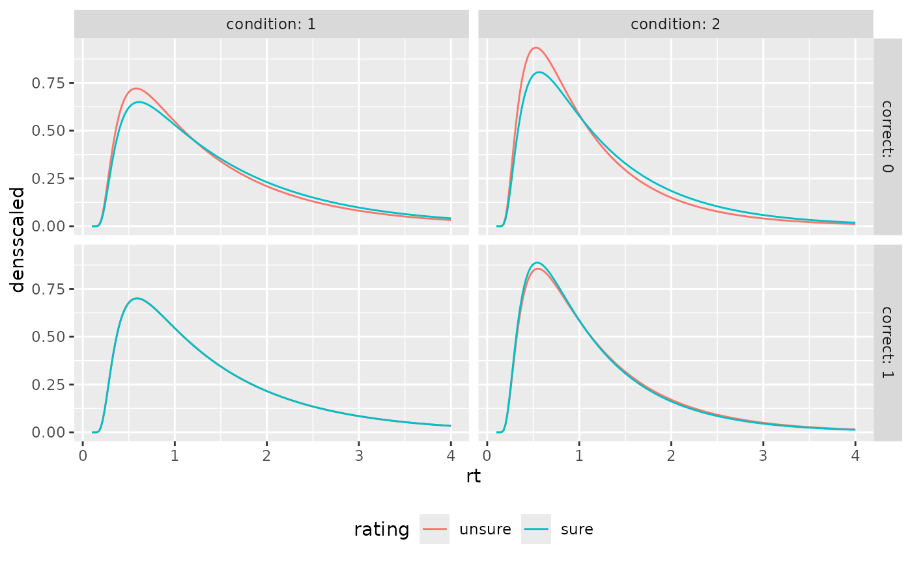

Prediction of Confidence Rating and Response Time Distribution in dynaViTE, dynWEV, and 2DSD confidence models
Source:R/predictratingdist_WEV.R
predictWEV.RdpredictWEV_Conf predicts the categorical response distribution of
decision and confidence ratings, predictWEV_RT computes the predicted
RT distribution (density) in the 2DSD Model (Pleskac & Busemeyer, 2010) and the
dynWEV model (Hellmann et al., 2023), given specific parameter constellations.
See ddynaViTE and d2DSD for more information about parameters.
Usage
predictWEV_Conf(paramDf, model = "dynaViTE", maxrt = Inf,
subdivisions = 100L, simult_conf = FALSE, stop.on.error = FALSE,
precision = 3, .progress = TRUE)
predictWEV_RT(paramDf, model = NULL, maxrt = 9, subdivisions = 100L,
minrt = NULL, simult_conf = FALSE, scaled = FALSE, DistConf = NULL,
precision = 3, .progress = TRUE)Arguments
- paramDf
a list or dataframe with one row. Column names should match the names of dynaViTE and 2DSD model specific parameter names. For different stimulus quality/mean drift rates, names should be
v1,v2,v3,.... Differentsvand/orsparameters are possible withsv1,sv2,sv3... (s1,s2,s3,... respectively) with equally many steps as for drift rates. Additionally, the confidence thresholds should be given by names withthetaUpper1,thetaUpper2,...,thetaLower1,... or, for symmetric thresholds only bytheta1,theta2,....- model
character scalar. One of "dynaViTE", "dynWEV", or "2DSD".
- maxrt
numeric. The maximum RT for the integration/density computation. Default: 15 (for
predictWEV_Conf(integration)), 9 (forpredictWEV_RT).- subdivisions
integer (default: 100). For
predictWEV_Confit is used as argument for the inner integral routine. ForpredictWEV_RTit is the number of points for which the density is computed.- simult_conf
logical. Whether in the experiment confidence was reported simultaneously with the decision, as then decision and confidence judgment are assumed to have happened subsequent before response and computations are different, when there is an observable interjudgment time (then
simult_confshould be FALSE).- stop.on.error
logical. Argument directly passed on to integrate. Default is FALSE, since the densities invoked may lead to slow convergence of the integrals (which are still quite accurate) which causes R to throw an error.
- precision
numerical scalar value. Precision of calculation. Corresponds to the step size of integration w.r.t.
zandt0. Default is 1e-5.- .progress
logical. if TRUE (default) a progress bar is drawn to the console.
- minrt
numeric or NULL(default). The minimum rt for the density computation.
- scaled
logical. For
predictWEV_RT. Whether the computed density should be scaled to integrate to one (additional columndensscaled). Otherwise the output contains only the defective density (i.e. its integral is equal to the probability of a response and not 1). IfTRUE, the argumentDistConfshould be given, if available. Default:FALSE.- DistConf
NULLordata.frame. Adata.frameormatrixwith column names, giving the distribution of response and rating choices for different conditions and stimulus categories in the form of the output ofpredictWEV_Conf. It is only necessary, ifscaled=TRUE, because these probabilities are used for scaling. Ifscaled=TRUEandDistConf=NULL, it will be computed with the functionpredictWEV_Conf, which takes some time and the function will throw a message. Default:NULL
Value
predictWEV_Conf returns a data.frame/tibble with columns: condition, stimulus,
response, rating, correct, p, info, err. p is the predicted probability of a response
and rating, given the stimulus category and condition. info and err refer to the
respective outputs of the integration routine used for the computation.
predictWEV_RT returns a data.frame/tibble with columns: condition, stimulus,
response, rating, correct, rt and dens (and densscaled, if scaled=TRUE).
Details
The function predictWEV_Conf consists merely of an integration of
the response time density, ddynaViTE and d2DSD, over the response time in a reasonable
interval (t0 to maxrt). The function predictWEV_RT wraps these density
functions to a parameter set input and a data.frame output.
For the argument paramDf, the output of the fitting function fitRTConf
with the respective model may be used.
Note
Different parameters for different conditions are only allowed for drift rate
v, drift rate variability sv, and process variability s. Otherwise, s is
not required in paramDf but set to 1 by default. All other parameters are used for all
conditions.
References
Hellmann, S., Zehetleitner, M., & Rausch, M. (2023). Simultaneous modeling of choice, confidence and response time in visual perception. Psychological Review 2023 Mar 13. doi: 10.1037/rev0000411. Epub ahead of print. PMID: 36913292.
Pleskac, T. J., & Busemeyer, J. R. (2010). Two-Stage Dynamic Signal Detection: A Theory of Choice, Decision Time, and Confidence, Psychological Review, 117(3), 864-901. doi:10.1037/a0019737
Examples
# Examples for "dynWEV" model (equivalent applicable for "2DSD" model (with less parameters))
# 1. Define some parameter set in a data.frame
paramDf <- data.frame(a=2.5,v1=0.5, v2=1, t0=0.1,z=0.55,
sz=0,sv=0.2, st0=0, tau=3, w=0.3,
theta1=0.8, svis=0.5, sigvis=0.8)
# 2. Predict discrete Choice x Confidence distribution:
preds_Conf <- predictWEV_Conf(paramDf, "dynWEV", maxrt = 15)
head(preds_Conf)
#> condition stimulus response correct rating p info err
#> 1 1 1 1 1 1 0.22413378 OK 3.643298e-06
#> 2 2 1 1 1 1 0.08306176 OK 2.343204e-06
#> 3 1 -1 1 0 1 0.11181226 OK 2.052870e-06
#> 4 2 -1 1 0 1 0.02919229 OK 1.178054e-06
#> 5 1 1 -1 0 1 0.07659838 OK 1.588271e-05
#> 6 2 1 -1 0 1 0.01620841 OK 5.775923e-05
# \donttest{
# To set simult_conf=TRUE makes a minor difference in the discrete distribution,
# because we integrate over response times (we just adapt maxrt for comparison)
preds_Conf2 <- predictWEV_Conf(paramDf, "dynWEV", simult_conf = TRUE, maxrt = 15+paramDf$tau)
summary(preds_Conf$p-preds_Conf2$p) # difference in predicted probabilities
#> Min. 1st Qu. Median Mean 3rd Qu. Max.
#> -1.609e-06 -2.617e-07 2.548e-10 -2.090e-07 7.731e-10 8.196e-09
# }
# 3. Compute RT density
preds_RT <- predictWEV_RT(paramDf, "dynWEV", maxrt=4, subdivisions=200) #(scaled=FALSE)
# same output with scaled density column:
preds_RT <- predictWEV_RT(paramDf, "dynWEV", maxrt=4, subdivisions=200,
scaled=TRUE, DistConf = preds_Conf)
head(preds_RT)
#> condition stimulus response correct rating rt dens
#> 1 1 1 1 1 1 0.1000000 0.000000e+00
#> 2 1 1 1 1 1 0.1195980 7.844018e-13
#> 3 1 1 1 1 1 0.1391960 2.838316e-06
#> 4 1 1 1 1 1 0.1587940 3.346474e-04
#> 5 1 1 1 1 1 0.1783920 3.193339e-03
#> 6 1 1 1 1 1 0.1979899 1.144218e-02
#> densscaled
#> 1 0.000000e+00
#> 2 3.499704e-12
#> 3 1.266349e-05
#> 4 1.493070e-03
#> 5 1.424747e-02
#> 6 5.105068e-02
# \donttest{
# produces a warning, if scaled=TRUE and DistConf missing
preds_RT <- predictWEV_RT(paramDf, "dynWEV", maxrt=4, subdivisions=200,
scaled=TRUE)
#> scaled is TRUE and DistConf is NULL. The rating distribution will be computed, which will take additional time.
# }
# \donttest{
# Example of visualization
library(ggplot2)
preds_Conf$rating <- factor(preds_Conf$rating, labels=c("unsure", "sure"))
preds_RT$rating <- factor(preds_RT$rating, labels=c("unsure", "sure"))
ggplot(preds_Conf, aes(x=interaction(rating, response), y=p))+
geom_bar(stat="identity")+
facet_grid(cols=vars(stimulus), rows=vars(condition), labeller = "label_both")
ggplot(preds_RT, aes(x=rt, color=interaction(rating, response), y=dens))+
geom_line(stat="identity")+
facet_grid(cols=vars(stimulus), rows=vars(condition), labeller = "label_both")+
theme(legend.position = "bottom")
ggplot(aggregate(densscaled~rt+correct+rating+condition, preds_RT, mean),
aes(x=rt, color=rating, y=densscaled))+
geom_line(stat="identity")+
facet_grid(cols=vars(condition), rows=vars(correct), labeller = "label_both")+
theme(legend.position = "bottom")

# }
# Use PDFtoQuantiles to get predicted RT quantiles
head(PDFtoQuantiles(preds_RT, scaled = FALSE))
#> # A tibble: 6 × 7
#> condition stimulus response correct rating p q
#> <int> <dbl> <dbl> <dbl> <fct> <dbl> <dbl>
#> 1 1 -1 -1 1 unsure 0.1 0.531
#> 2 1 -1 -1 1 unsure 0.3 0.845
#> 3 1 -1 -1 1 unsure 0.5 1.20
#> 4 1 -1 -1 1 unsure 0.7 1.71
#> 5 1 -1 -1 1 unsure 0.9 2.67
#> 6 1 -1 -1 1 sure 0.1 0.531